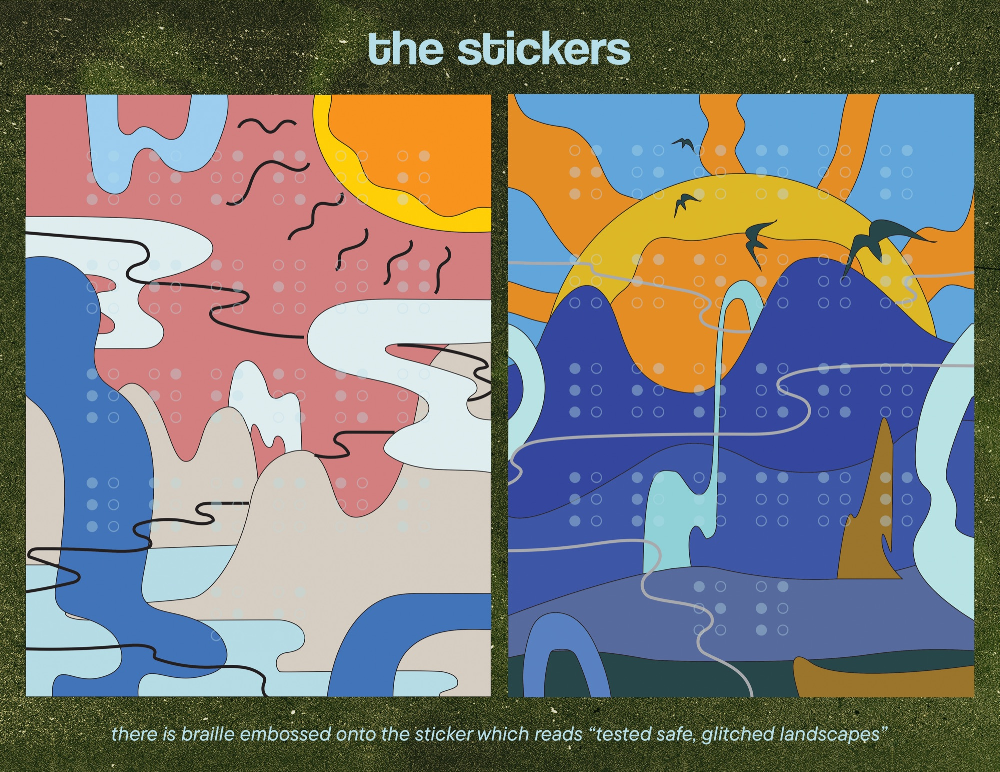
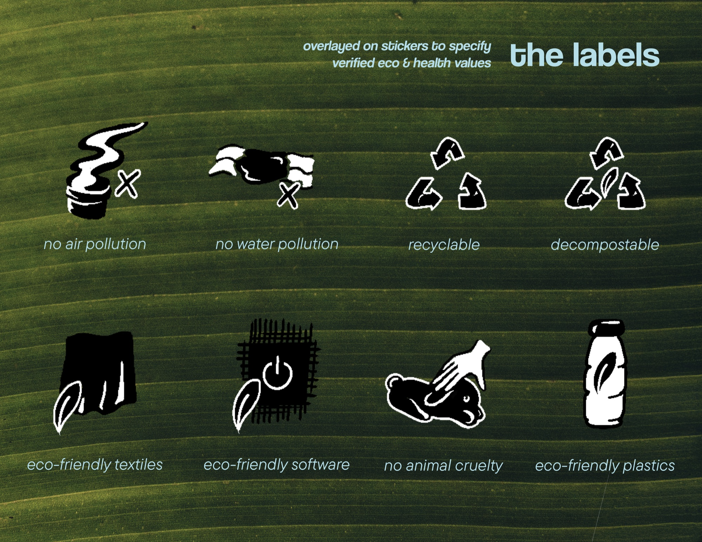
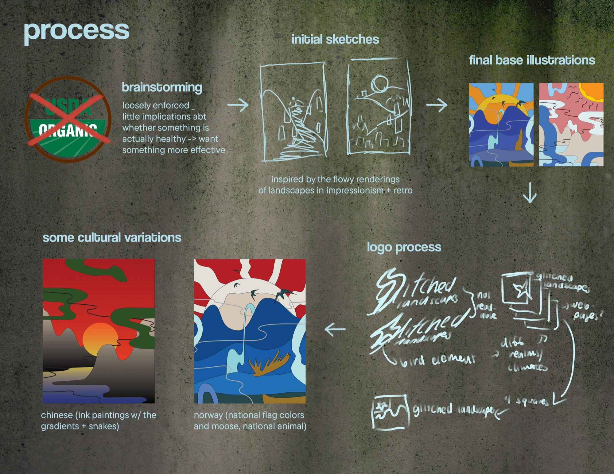
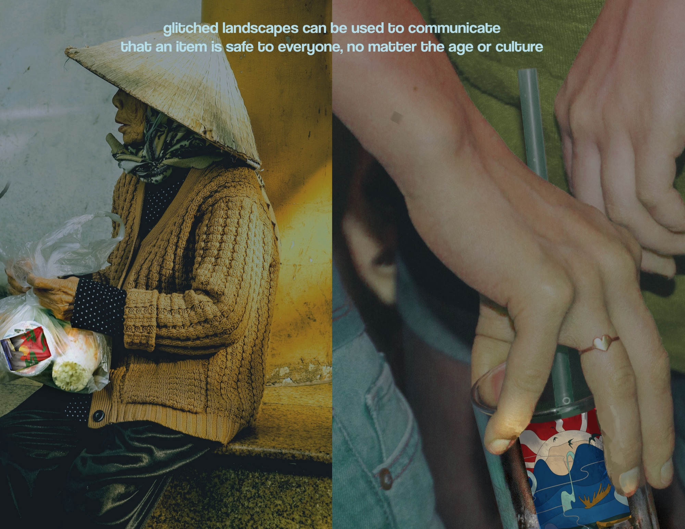

Glitched Landscapes — Illustration, Mockups
Software used: Adobe Illustrator, Adobe Photoshop, Procreate
Glitched Landscapes is a sticker system where there is base illustration based on the animals and landscape of the area the stickers are being distributed with an illustrative overlay displaying multiple health/environmental effects. The sticker overall shows if a product is ecosystem and health conscious, and the overlay specifies the product’s health/environmental focuses.

Process



